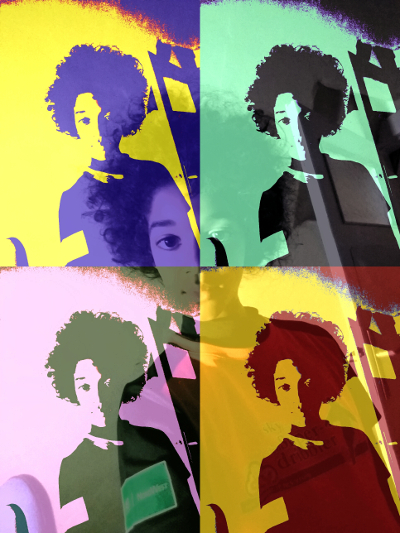

ch1-200x265.png
=
miraculous-image-400x533.png
| Perl Weekly Challenge #34 Task #2, Demonstrate Dispatch Table |
This week PWC in Task #2 shall demonstrate a Dispatch Table. We use the Dispatch Table to call different functions according to command line arguments.
These different functions do some different kinds of image processing. Mainly we want to create a miraculous image. Means we want to hide one grayscale image within a bigger colored image. Some intermediate steps of this image processing can be printed to file with command line arguments.
In Task #1 of PWC #34 you could already see how to reveal the hidden image. The functions used there are not explained anymore in Task #2. Also some basic explanations on Hash Slices and Array Slices are in Task #1. But in Task #2 we try to use Slices were ever possible.
# perldoc ch-2.pl - POD
./ch-2.pl <command>
# ./ch-2.pl pdl - Creates Hidden Grayscale from Colored Image
# ./ch-2.pl array - Array Version does NOT work properly
# ./ch-2.pl html - HTML/CSS in ch-1.html/pwc.css
# ./ch-2.pl help - Usage informationThe big image is the "vessel", where I want to hide the "secret" grayscale image. The resulting image looks like the "vessel", but in each LSB of the R/G/B channels are hidden the MSB's (Bit 7/6/5) of the secret image. This is possible because the LSB does not add much significancy to the "vessel" image.
|
+ | = |  | ch1-400x533.png ch1-200x265.png = miraculous-image-400x533.png |
Below you can see the steps done to create this Miraculous Image.
Read the "Secret" image and split it into its Bit Planes. We hide Bit 7/6/5.
Read the "Vessel" image and split it into its R/G/B values. Then split each R/G/B into its Bit Planes.
Hide Bit 7/6/5 of "Secret" in Bit 0 of each R/G/B of "Vessel".
Write Miraculous Image to PNG file.
The main program starts with the definition of some variables. This is not really necessary for the keys of the Hashes. But I use it to explain them in the beginning, because they are used everywhere.
So lets start with the array @RGB. It is used to create a RGB Slice a little bit easier:
my @RGB = ('red','green','blue'); # For creating Hash Slicesi.e. the below Hash Slice becomes a little bit shorter:
@vessel{'red','green','blue'} = rgb($vessel{data});
@vessel{@RGB} = rgb($vessel{data});Our "Secret" Image has a filenam "name" and reads the PDL "data". It is splitted in a "bit_plane" in 3 variants: "lsb", "msb", "raw".
my %secret = (
name => "ch1-200x265.png",
data => 0,
bit_plane => {
lsb => [],
msb => [],
raw => [],
},
);Similar Hash Keys we use for the "Vessel" Image. But because it is a coloured image we split the image in its "red", "green" and "blue" channels. Also the "bit_plane" is split into "red", "green" and "blue".
my %vessel = (
name => "ch1-400x533.png", # file name
data => 0, # PDL data
bit_plane => { # Bit Plane
red => [],
green => [],
blue => [],
},
red => 0,
green => 0,
blue => 0,
);The "Composed" Image is defined here only with the filename "name". All other Hash Keys are defined somewhere else in the program.
my %composed = (
name => "composed-400x533.png",
);We use a Dispatch Table to call the different functions of the program. So our main program mainly consists of this Dispatch Table.
A Dispatch Table is simply a Hash that takes as value a code reference. So the code can be executed when &{$dispatch{$command}($ARGV[0])} is called, see below:
my $cmd = shift @ARGV; # Read command
$cmd = "help" if not $cmd;
print "ch-2.pl (Version 1.0) PWC #34 Task #2: $cmd\n";
# --- Dispatch Table
my %dispatch = (
html => \&html,
help => \&usage,
print_secret_raw => \&print_secret_raw,
print_secret_msb => \&print_secret_msb,
print_vessel_rgb => \&print_vessel_rgb,
print_vessel_lsb => \&print_vessel_lsb,
print_composed_examples => \&print_composed_examples,
compose => \&compose,
);
if( $dispatch{$command} ) { &{$dispatch{$command}}($ARGV[0]);
else { &usage; }The "print_*" commands only prints the intermediate images that you can see in this Blog. Only the "compose" option creates the Miraculous Image.
What we need from the Secret Image is the Bit Plane. Every Bit Plane is needed on LSB, because we want to hide this information in LSB of the Vessel Image. So we would only need to call the Bit Plane function bit_plane($secret{data},"lsb") with the "lsb" option.
The assignment to the %secret Hash is done via a Hash Slice.
sub secret {
$secret{data} = read_png($secret{name});
@{ $secret{bit_plane} }{'lsb','msb','raw'} = (
[ bit_plane($secret{data},"lsb") ],
[ bit_plane($secret{data},"msb") ],
[ bit_plane($secret{data},"raw") ],
);
}The function print_secret_raw() prints some intermediate steps in our hiding process. It prints the bit planes for bit 7, 6, 5 and the composed image of the 3 bit planes to the below files. The composed image is also the image that we want to hide in the vessel image.
 |
 |
 |
# ./ch-2.pl print_secret_raw secret-bp-7-raw.png secret-bp-6-raw.png secret-bp-5-raw.png These "Secret" 3 Bit Planes shall be hidden in "Vessel". |
 |
secret-bp-765.png | ||
First the secret image is read from PNG file. Second the image data is split into its bit planes, the option "raw" preserves the bit position within the byte of each pixel. The 3 most significant bits (MSB) are binary ORed to a new image. All 4 images are printed to a PNG file.
sub print_secret_raw {
# ------- read secret image
$secret{data} = read_png($secret{name});
# ------- separate image into its bit planes, preserve bit position
@{ $secret{bit_plane_raw} } = bit_plane($secret{data},"raw");
# ------- binary OR of bit plane 7/6/5
my $new_secret =
$secret{bit_plane_raw}->[7] |
$secret{bit_plane_raw}->[6] |
$secret{bit_plane_raw}->[5];
# ------- write image data to PNG file
write_png($new_secret,"secret-bp-765.png");
write_png($secret{bit_plane_raw}->[7],"secret-bp-7-raw.png");
write_png($secret{bit_plane_raw}->[6],"secret-bp-6-raw.png");
write_png($secret{bit_plane_raw}->[5],"secret-bp-5-raw.png");
}The function print_secret_msb() makes each bit plane a little bit more visible. It shifts each bit up to bit 7 (MSB). So the intensity of the two values 0/1 is in decimal 0/128. The following 3 images are the same bits 7/6/5.
 |
 |
 |
# ./ch-2.pl print_secret_msb secret-bp-7-msb.png secret-bp-6-msb.png secret-bp-5-msb.png |
The important difference in this code is the call of function bit_plane() with the option "msb".
sub print_secret_msb {
$secret{data} = read_png($secret{name});
@{ $secret{bit_plane_msb} } = bit_plane($secret{data},"msb");
write_png($secret{bit_plane_msb}->[7],"secret-bp-7-msb.png");
write_png($secret{bit_plane_msb}->[6],"secret-bp-6-msb.png");
write_png($secret{bit_plane_msb}->[5],"secret-bp-5-msb.png");
}This intermediate step extracts the R/G/B channels of the coloured Vessel Image. From each channel another RGB Image is created by setting the other 2 colors to zero. These resulting images are written to PNG file.
 |
 |
 |
# ./ch-2.pl print_vessel_rgb vessel-red.png vessel-grn.png vessel-blu.png Each R/G/B Channel of "Vessel" is used to hide one Bit (7/6/5) of "Secret". |
sub print_vessel_rgb {
$vessel{data} = read_png($vessel{name});
@vessel{'red','green','blue'} = rgb($vessel{data});
my $red = one_color($vessel{red},"red");
my $grn = one_color($vessel{green},"green");
my $blu = one_color($vessel{blue},"blue");
write_png($red,"vessel-red.png");
write_png($grn,"vessel-grn.png");
write_png($blu,"vessel-blu.png");
}The LSB of each R/G/B channel has not much information, it becomes more or less Noise.
 |
 |
 |
# ./ch-2.pl print_vessel_lsb vessel-red-lsb.png vessel-grn-lsb.png vessel-blu-lsb.png Each Bit 0 (LSB) of R/G/B Channel of "Vessel" is used to hide one Bit (7/6/5) of "Secret". LSB is mostly Noise. |
Most of the code we know already. Complicate here is the Hash Slice for the Bit Plane. The function bit_plane() returns a list, but how to assign 3 arrays to a Hash Slice of arrays? So I had to assign an array ref to the Hash Slice.
To make a Bit Plane better visible, we shifted the LSB to the MSB. Now I multiplicate the LSB with 255. This is even better visible, because the binary 0/1 values become 0/255 (before 0/128).
sub print_vessel_lsb {
# ---- Read PNG and convert rot R/G/B
$vessel{data} = read_png($vessel{name});
@vessel{'red','green','blue'} = rgb($vessel{data});
# ---- Print some information for PDL
info_pdl($vessel{red} , "Vessel RED");
info_pdl($vessel{green}, "Vessel GRN");
info_pdl($vessel{blue} , "Vessel BLU");
# ---- Get Bit Plane of each R/G/B
@{ $vessel{bit_plane} }{@RGB} = (
[ bit_plane($vessel{red}) ],
[ bit_plane($vessel{green}) ],
[ bit_plane($vessel{blue}) ],
);
# ---- Alternative to get Bit Plane, without Hash Slice
# @{ $vessel{bit_plane}{red} } = bit_plane($vessel{red},"raw");
# @{ $vessel{bit_plane}{green} } = bit_plane($vessel{green},"raw");
# @{ $vessel{bit_plane}{blue} } = bit_plane($vessel{blue},"raw");
# ---- Again some information for PDL, because Hash Slice above was not easy.
info_pdl($vessel{bit_plane}{red}[0],"Vessel Bit Plane RED");
info_pdl($vessel{bit_plane}{green}[0],"Vessel Bit Plane GRN");
info_pdl($vessel{bit_plane}{blue}[0],"Vessel Bit Plane BLU");
# ---- Make RGB from each channel, but no shift to MSB, instead
# multiplicate with 255.
my $red = one_color(($vessel{bit_plane}{red}[0]*255) ,"red");
my $grn = one_color(($vessel{bit_plane}{green}[0]*255),"green");
my $blu = one_color(($vessel{bit_plane}{blue}[0]*255) ,"blue");
# ---- Write PDL data to PNG file
write_png($red,"vessel-red-lsb.png");
write_png($grn,"vessel-grn-lsb.png");
write_png($blu,"vessel-blu-lsb.png");
}The following output is generated for the print_vessel_lsb Option. We can see that for every PDL an info is printed. This we needed to debug the code above. It was difficult to get the Hash Slice working. The direct assignment as a Hash Value (see above alternative) was easier.
# ./ch-2.pl print_vessel_lsb
ch-2.pl (Version 1.0) PWC #34 Task #2: print_vessel_lsb
Vessel RED: Type byte (0) Dims 2 (400/533) #Ele 213200 Sum 30696312
Vessel GRN: Type byte (0) Dims 2 (400/533) #Ele 213200 Sum 28325969
Vessel BLU: Type byte (0) Dims 2 (400/533) #Ele 213200 Sum 22381809
Vessel Bit Plane RED: Type byte (0) Dims 2 (400/533) #Ele 213200 Sum 98516
Vessel Bit Plane GRN: Type byte (0) Dims 2 (400/533) #Ele 213200 Sum 111231
Vessel Bit Plane BLU: Type byte (0) Dims 2 (400/533) #Ele 213200 Sum 109309In the former code we only read the Vessel and Secret Image from PNG file and decomposed them into the Colour Channels and Bit Planes.
Now we need to compose Bit 7/6/5 of the Secret Image into the LSB of the three Colour Channels (RGB). Depending on the Option zero|mid|slice the Secret image is hidden in the left-bottom corner (zero), in the middle (mid) or in every second column (slice).
sub compose {
my ($type) = @_; # zero|mid|slice
$type = "zero" if not $type;
secret(); # Read and split "Secret" image.
vessel(); # Read and split "Vessel" image.
print "---- Compose Vessel/Secret $type ----\n";
# Get reference to Bit 0, PDL::NiceSlice otherwise will not work.
my $red = $vessel{bit_plane}{red}->[0];
my $grn = $vessel{bit_plane}{green}->[0];
my $blu = $vessel{bit_plane}{blue}->[0];
if($type eq "zero") { # Put "Secret" in left-bottom corner of "Vessel", with PDL::NiceSlice.
$red(0:199,0:264) .= $secret{bit_plane}{lsb}->[7];
$grn(0:199,0:264) .= $secret{bit_plane}{lsb}->[6];
$blu(0:199,0:264) .= $secret{bit_plane}{lsb}->[5];
}
elsif($type eq "mid") { # Put "Secret" in the middle of "Vessel", with PDL::NiceSlice.
$red(100:299,132:396) .= $secret{bit_plane}{lsb}->[7];
$grn(100:299,132:396) .= $secret{bit_plane}{lsb}->[6];
$blu(100:299,132:396) .= $secret{bit_plane}{lsb}->[5];
}
elsif($type eq "slice") {
# Get reference to "Secret" Bit 7/6/5, PDL::NiceSlice otherwise will not work.
my $sec_red = $secret{bit_plane}{lsb}->[7];
my $sec_grn = $secret{bit_plane}{lsb}->[6];
my $sec_blu = $secret{bit_plane}{lsb}->[5];
for(my $i=0; $i<=199; $i++) {
# Put Slices of "Secret" in every second row, with PDL::NiceSlice.
$red(($i*2),132:396) .= $sec_red(($i),:);
$grn(($i*2),132:396) .= $sec_grn(($i),:);
$blu(($i*2),132:396) .= $sec_blu(($i),:);
}
}
# Rebuild the Bit Planes of the 3 Colours
$composed{red} = rebuild_bit_plane($vessel{bit_plane}{red});
$composed{green} = rebuild_bit_plane($vessel{bit_plane}{green});
$composed{blue} = rebuild_bit_plane($vessel{bit_plane}{blue});
# Compose final image
$composed{data} = torgb(@composed{@RGB}); # Hash Slice
write_png(@composed{'data','name'}); # Hash Slice
} |
 |
 |
 |
# ./ch-2.pl print_composed_examples zero composed-zero-red-bit7.png composed-zero-red-bit6.png composed-zero-red-bit5.png Secret image is hidden at position "zero", in left-bottom corner. |
 |
 |
 |
 |
# ./ch-2.pl print_composed_examples mid composed-mid-red-bit7.png composed-mid-grn-bit6.png composed-mid-blu-bit5.png Secret image is hidden in the middle of the vessel image. |
 |
 |
 |
 |
# ./ch-2.pl print_composed_examples slice composed-slice-red-bit7.png composed-slice-grn-bit6.png composed-slice-blu-bit5.png Secret image is hidden vertically in the middle and horizontally in every second column of the vessel image. |
 |
... | |
= |  |
| Vessel Bit 7 | Vessel Bit 0 Secret |
Miraculous Image |
The previous showed intermediate images have been printed with the option print_composed_examples.
sub print_composed_examples {
my ($type) = @_;
$type = "zero" if not $type;
compose($type);
# --- Bit 0 multiplied with 255 and create a RGB image with 2 colors set to "0".
my $red = one_color($vessel{bit_plane}{red}->[0]*255,"red");
my $grn = one_color($vessel{bit_plane}{green}->[0]*255,"green");
my $blu = one_color($vessel{bit_plane}{blue}->[0]*255,"blue");
# --- Compose only Bit 0 to a RGB image, each multiplied with 255.
my $color0 = torgb(
$vessel{bit_plane}{red}->[0]*255,
$vessel{bit_plane}{green}->[0]*255,
$vessel{bit_plane}{blue}->[0]*255,
);
# --- Compose only Bit 7 to a RGB image
my $color7 = torgb(
$vessel{bit_plane}{red}->[7],
$vessel{bit_plane}{green}->[7],
$vessel{bit_plane}{blue}->[7],
);
write_png($red,"tmp/composed-$type-red-bit7.png");
write_png($grn,"tmp/composed-$type-grn-bit6.png");
write_png($blu,"tmp/composed-$type-blu-bit5.png");
write_png($color0,"tmp/composed-$type-color-lsb.png");
write_png($color7,"tmp/composed-$type-color-msb.png");
}Here are some new functions implemented, that we did not need in Task #1.
$data = one_color($rgb_data,$color)
$data = rebuild_bit_plane($bit_plane);
$data = torgb($red,$green,$blue);
Some functions used in Task #2 are explained already in Task #1 of PWC #34.
The function one_color() creates a RGB image with one color channel set to its value, but the two other colors are set to zero. This is done to better visualize the splitted channels of a RGB image.
sub one_color {
my ($img,$color) = @_; # $color = red|green|blue
# ------- Create image data of same dimension with only zeroes
my $result = zeroes(byte(),3,$img->dims);
# ------- Assign image data to choosen channel
my %c = ( red=>0, green=>1, blue=>2 );
for(my $i=0; $i<3; $i++) {
if($i == $c{$color}) { $result(($i),:,:) .= $img; } # PDL::NiceSlice
}
return ($result); # Return new image
}The argument is an array ref to the @bit_plane array. It returns the composed image data.
sub rebuild_bit_plane {
my ($bp) = @_; # array ref to bit plane
my $result = zeroes( # empty PDL of same size
byte(), # PDL type byte
$bp->[0]->dims # PDL dimenstion of bit plane bit 0.
);
for(my $i=0;$i<=7;$i++) { # iterate each bit position
$result |= $bp->[$i]; # binary OR of each bit plane
}
return $result; # return result
}The three single R/G/B channels are composed to one RGB image. Takes a list of the 3 channels $red,$green,$blue and returns the composed image data.
sub torgb {
my ($r,$g,$b) = @_;
my $img = zeroes(byte(),3,$r->dims); # Create empty PDL with same dimenstion
$img((0),:,:) .= $r; # Assign Value to PDL::NiceSlice
$img((1),:,:) .= $g;
$img((2),:,:) .= $b;
return $img; # Return composed coloured image
}Chuck
| Perl Weekly Challenge #34 Task #2, Demonstrate Dispatch Table |